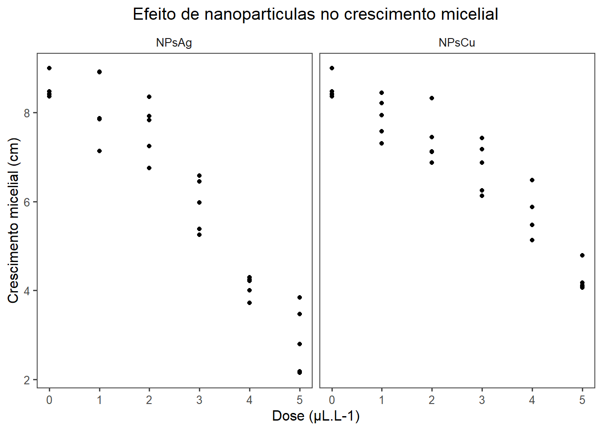
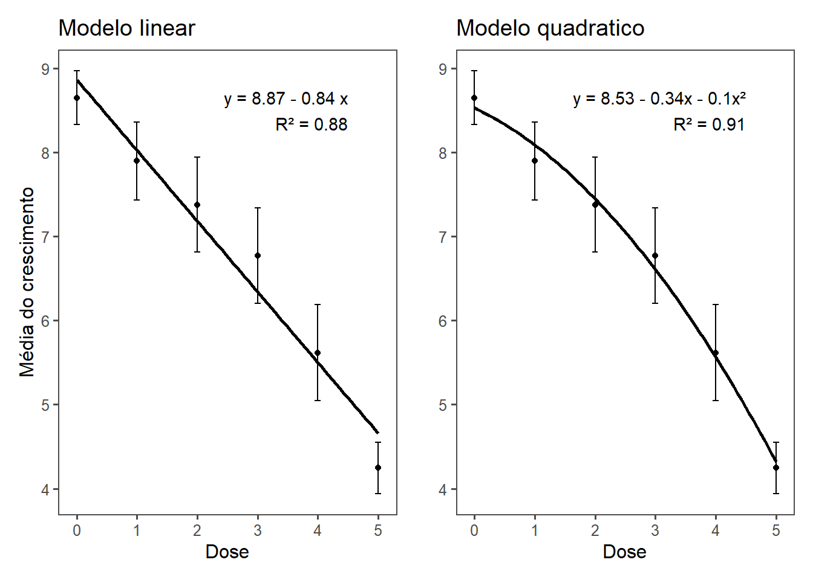
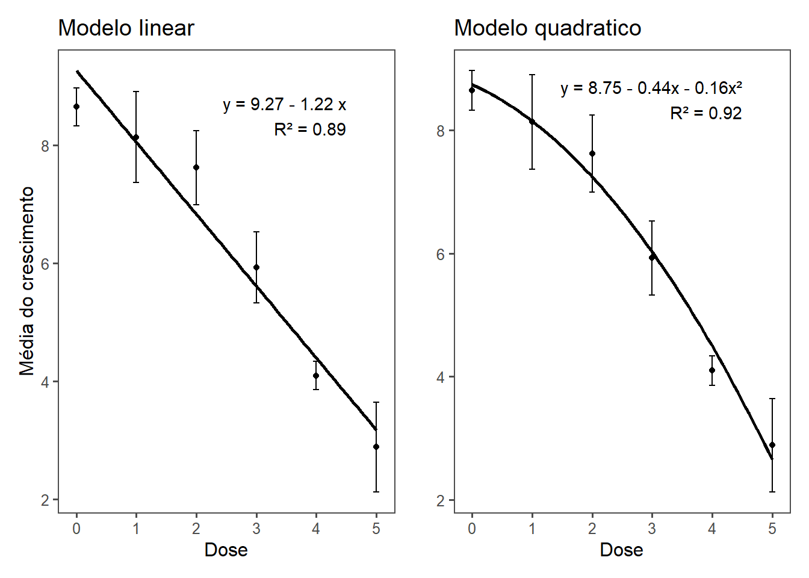
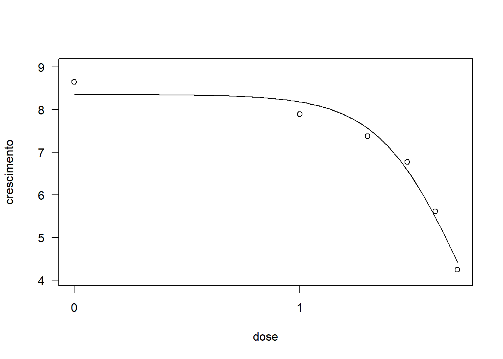
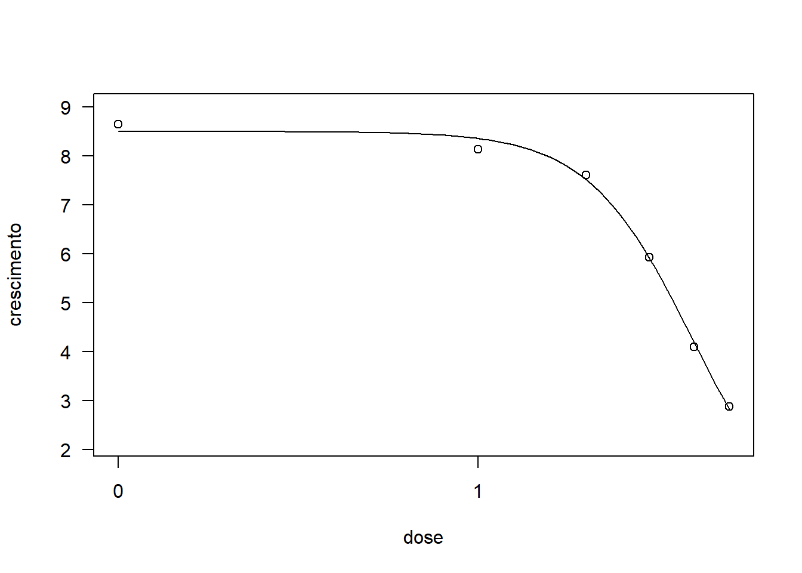
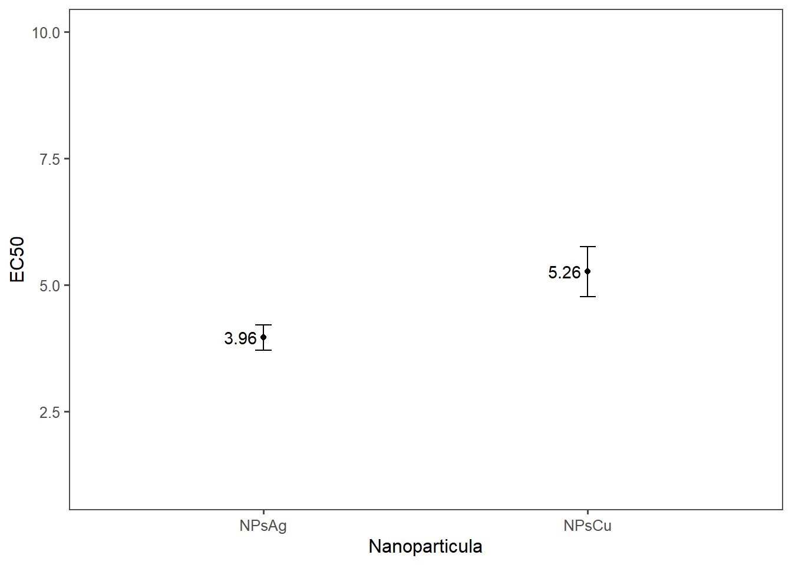

library(tidyverse)
library(ggthemes)
library(readxl)
library(DT)
library(drc)
library(patchwork)
library(ggplot2)Teste in vitro
Pacotes
Importando os dados
library(readxl)
data <- read_xlsx("experimento_arroz.xlsx")
library(DT)
datatable(data)Analise exploratoria
data2 <- data |>
group_by(trat, dose) |>
summarise(growth_mean = mean(crescimento))
data |>
ggplot(aes(dose, crescimento))+
geom_point()+
#geom_line()+
facet_wrap(~trat) +
labs(x = "Dose (μL.L-1)", y = "Crescimento micelial (cm)", title= "Efeito de nanoparticulas no crescimento micelial") +
theme_few()+
theme(plot.title = element_text(hjust = 0.5)) 
dataAnalise para NPsCu:
Ajuste de modelo para regresão:
Modelo linear
cu <- data |> filter(trat == "NPsCu")
m1 <- lm(crescimento ~ dose, data=cu)
summary(m1)
Call:
lm(formula = crescimento ~ dose, data = cu)
Residuals:
Min 1Q Median 3Q Max
-0.71383 -0.42930 -0.07289 0.24759 1.13806
Coefficients:
Estimate Std. Error t value Pr(>|t|)
(Intercept) 8.86571 0.17145 51.71 < 2e-16 ***
dose -0.84189 0.05663 -14.87 8.15e-15 ***
---
Signif. codes: 0 '***' 0.001 '**' 0.01 '*' 0.05 '.' 0.1 ' ' 1
Residual standard error: 0.5297 on 28 degrees of freedom
Multiple R-squared: 0.8876, Adjusted R-squared: 0.8835
F-statistic: 221 on 1 and 28 DF, p-value: 8.152e-15Modelo quadratico:
m2=lm( crescimento ~ dose + I(dose^2), data = cu)
summary(m2)
Call:
lm(formula = crescimento ~ dose + I(dose^2), data = cu)
Residuals:
Min 1Q Median 3Q Max
-0.7807 -0.3269 -0.1267 0.3482 0.9150
Coefficients:
Estimate Std. Error t value Pr(>|t|)
(Intercept) 8.53143 0.19074 44.729 < 2e-16 ***
dose -0.34046 0.17941 -1.898 0.06849 .
I(dose^2) -0.10029 0.03444 -2.912 0.00713 **
---
Signif. codes: 0 '***' 0.001 '**' 0.01 '*' 0.05 '.' 0.1 ' ' 1
Residual standard error: 0.4706 on 27 degrees of freedom
Multiple R-squared: 0.9144, Adjusted R-squared: 0.9081
F-statistic: 144.3 on 2 and 27 DF, p-value: 3.857e-15Comparação dos modelos
AIC(m1, m2) df AIC
m1 3 50.94009
m2 4 44.74804Representação grafica dos dois modelos de melhor ajuste para NPsCu:
c <- cu |>
group_by(dose) |>
summarize(meancresc = mean(crescimento), sd=sd(crescimento))
# Modelo linear
c1 <- c |>
ggplot(aes(dose, meancresc))+
geom_point()+
# scale_x_continuous(breaks = seq(7,22,2), limits = c(7,21))+
geom_smooth(se = F, formula = y ~ poly(x, 1), method = "lm", color = "black")+
theme_few()+
annotate(geom = "text",
x = 4.5, y = 8.5,
label = "y = 8.87 - 0.84 x
R² = 0.88",
hjust = 1,5)+
geom_errorbar(aes(ymin = meancresc - sd,
ymax = meancresc + sd),
width = 0.1) +
labs(y= "Média do crescimento", x= "Dose", title = 'Modelo linear')
# Modelo quadratico
c2 <- c |>
ggplot(aes(dose, meancresc))+
geom_point()+
# scale_x_continuous(breaks = seq(7,22,2), limits = c(7,21))+
geom_smooth(se = F, formula = y ~ poly(x, 2), method = "lm", color = "black")+
theme_few()+
annotate(geom = "text",
x = 4.5, y = 8.5,
label = "y = 8.53 - 0.34x - 0.1x²
R² = 0.91",
hjust = 1,5)+
geom_errorbar(aes(ymin = meancresc - sd,
ymax = meancresc + sd),
width = 0.1) +
labs(y= "", x= "Dose", title = 'Modelo quadratico')
(c1|c2)
Analises para NPsAg:
Ajuste de modelo para regresão:
Modelo linear
ag = data |> filter(trat == "NPsAg")
m1 =lm(crescimento ~ dose, data=ag)
summary(m1)
Call:
lm(formula = crescimento ~ dose, data = ag)
Residuals:
Min 1Q Median 3Q Max
-1.0255 -0.3891 -0.1757 0.6034 1.5203
Coefficients:
Estimate Std. Error t value Pr(>|t|)
(Intercept) 9.26581 0.23467 39.48 < 2e-16 ***
dose -1.21806 0.07751 -15.71 2.02e-15 ***
---
Signif. codes: 0 '***' 0.001 '**' 0.01 '*' 0.05 '.' 0.1 ' ' 1
Residual standard error: 0.725 on 28 degrees of freedom
Multiple R-squared: 0.8982, Adjusted R-squared: 0.8945
F-statistic: 247 on 1 and 28 DF, p-value: 2.025e-15Modelo quadratico
m2=lm( crescimento ~ dose + I(dose^2), data = ag)
summary(m2)
Call:
lm(formula = crescimento ~ dose + I(dose^2), data = ag)
Residuals:
Min 1Q Median 3Q Max
-1.0117 -0.4536 -0.2225 0.5202 1.1840
Coefficients:
Estimate Std. Error t value Pr(>|t|)
(Intercept) 8.74629 0.24893 35.136 < 2e-16 ***
dose -0.43877 0.23415 -1.874 0.07181 .
I(dose^2) -0.15586 0.04495 -3.467 0.00178 **
---
Signif. codes: 0 '***' 0.001 '**' 0.01 '*' 0.05 '.' 0.1 ' ' 1
Residual standard error: 0.6141 on 27 degrees of freedom
Multiple R-squared: 0.9295, Adjusted R-squared: 0.9243
F-statistic: 178.1 on 2 and 27 DF, p-value: 2.799e-16Comparação dos modelos
AIC(m1, m2) df AIC
m1 3 69.77305
m2 4 60.72449Representação grafica dos dois modelos de melhor ajuste:
a <- ag |>
group_by(dose) |>
summarize(meancresc = mean(crescimento), sd=sd(crescimento))
# Modelo linear
a1 <- a |>
ggplot(aes(dose, meancresc))+
geom_point()+
# scale_x_continuous(breaks = seq(7,22,2), limits = c(7,21))+
geom_smooth(se = F, formula = y ~ poly(x, 1), method = "lm", color = "black")+
theme_few()+
annotate(geom = "text",
x = 4.5, y = 8.5,
label = "y = 9.27 - 1.22 x
R² = 0.89",
hjust = 1,5)+
geom_errorbar(aes(ymin = meancresc - sd,
ymax = meancresc + sd),
width = 0.1) +
labs(y= "Média do crescimento", x= "Dose", title = 'Modelo linear')
# Modelo quadratico
a2 <- a |>
ggplot(aes(dose, meancresc))+
geom_point()+
# scale_x_continuous(breaks = seq(7,22,2), limits = c(7,21))+
geom_smooth(se = F, formula = y ~ poly(x, 2), method = "lm", color = "black")+
theme_few()+
annotate(geom = "text",
x = 4.5, y = 8.5,
label = "y = 8.75 - 0.44x - 0.16x²
R² = 0.92",
hjust = 1,5)+
geom_errorbar(aes(ymin = meancresc - sd,
ymax = meancresc + sd),
width = 0.1) +
labs(y= "", x= "Dose", title = 'Modelo quadratico')
(a1|a2)
EC50
Calculo do EC50 - NPsCu
drc1 <- drm(crescimento ~ dose, data = cu,
fct = LL.3())
summary(drc1)
Model fitted: Log-logistic (ED50 as parameter) with lower limit at 0 (3 parms)
Parameter estimates:
Estimate Std. Error t-value p-value
b:(Intercept) 2.33344 0.42423 5.5004 7.965e-06 ***
d:(Intercept) 8.35617 0.20363 41.0368 < 2.2e-16 ***
e:(Intercept) 5.25965 0.24253 21.6864 < 2.2e-16 ***
---
Signif. codes: 0 '***' 0.001 '**' 0.01 '*' 0.05 '.' 0.1 ' ' 1
Residual standard error:
0.5089379 (27 degrees of freedom)plot(drc1)
ED(drc1, 50, interval = "delta")
Estimated effective doses
Estimate Std. Error Lower Upper
e:1:50 5.25965 0.24253 4.76202 5.75729Calculo do EC50 - NPsAg
drc2 <- drm(crescimento ~ dose, data = ag,
fct = LL.3())
summary(drc2)
Model fitted: Log-logistic (ED50 as parameter) with lower limit at 0 (3 parms)
Parameter estimates:
Estimate Std. Error t-value p-value
b:(Intercept) 2.97947 0.34067 8.7458 2.318e-09 ***
d:(Intercept) 8.50271 0.19491 43.6245 < 2.2e-16 ***
e:(Intercept) 3.95940 0.12170 32.5339 < 2.2e-16 ***
---
Signif. codes: 0 '***' 0.001 '**' 0.01 '*' 0.05 '.' 0.1 ' ' 1
Residual standard error:
0.5707139 (27 degrees of freedom)plot(drc2)
ED(drc2, 50, interval = "delta")
Estimated effective doses
Estimate Std. Error Lower Upper
e:1:50 3.9594 0.1217 3.7097 4.2091dadonano <- data.frame( Trat = c("NPsCu", "NPsAg"),
Estimate = c(5.25965, 3.9594 ),
Lower = c(4.76202, 3.7097),
Upper = c(5.75729, 4.2091))
datatable(dadonano)plotEC <- dadonano |>
ggplot(aes(Trat, Estimate)) +
geom_point() +
ylim(1,10)+
geom_errorbar(aes(ymin = Lower, ymax = Upper), width = 0.05) +
geom_text(aes(label = round(Estimate, 2)), hjust = 1.2) +
labs(x = "Nanoparticula", y = "EC50") +
theme_few()
plotEC